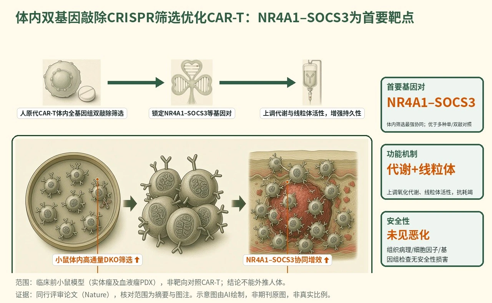

体内双基因敲除筛选揭示CAR-T协同增效基因对
研究采用高通量体内双敲除CRISPR筛选，在临床前小鼠肿瘤模型中鉴定出可增强CAR-T细胞活性的协同基因对，其中NR4A1–SOCS3组合效果最突出。双敲除增强了代谢适应性和线粒体活性，在多种肿瘤模型中表现出强效的抗肿瘤活性和长期控制能力。

- 高通量双敲除CRISPR筛选
- 鉴定协同增效基因对
- NR4A1–SOCS3为最优组合
- 多种肿瘤模型（实体瘤与血液瘤PDX）长期控制
示意图展示了通过体内CRISPR筛选识别协同增效基因对的策略，以及NR4A1–SOCS3双敲除如何通过增强代谢适应性提升CAR-T功能。
研究背景与待解问题
CAR-T细胞疗法在实体瘤中的疗效受限于肿瘤微环境中的免疫抑制和T细胞耗竭。单基因工程改造已有一定进展，但协同基因组合的系统性筛选相对有限。
本研究要回答的问题是：能否通过高通量体内双敲除筛选，系统性地发现增强CAR-T活性的协同基因对？
研究设计
研究设计了高通量体内双敲除CRISPR筛选平台，在小鼠肿瘤模型中直接评估基因组合对CAR-T抗肿瘤活性的影响。筛选出的候选组合随后在多种肿瘤模型中进行验证，并与已报道的单基因和双基因工程策略进行比较。
核心结果
筛选发现
NR4A1–SOCS3组合是筛选中表现最突出的协同基因对。该双敲除显著增强了CAR-T细胞的代谢适应性和线粒体活性。
功能验证
在多种小鼠肿瘤模型中（包括实体瘤如U87-EGFRvIII、MCF7、HT-29，以及B-ALL/套细胞淋巴瘤PDX），NR4A1–SOCS3双敲除CAR-T细胞表现出：
- 强效的抗肿瘤活性
- 长期肿瘤控制能力
- 效果优于若干已报道的单基因和双基因改造方案
机制解读
论文所证实的： NR4A1和SOCS3的协同敲除可通过增强代谢适应性和线粒体功能提升CAR-T细胞活性。NR4A1是T细胞耗竭相关的转录因子，SOCS3是细胞因子信号的负调控因子，两者的联合敲除可能通过互补机制解除CAR-T的功能限制。
需要进一步验证的： 该策略的人体安全性和疗效、双敲除的长期基因组稳定性、以及在实体瘤患者中的临床转化可行性。
局限与不确定
- 全部为临床前动物模型数据，无人体安全性或疗效数据。
- 体内筛选的统计学效力受动物实验规模限制。
- 双敲除的长期基因组稳定性和潜在脱靶效应需进一步评估。
- 小鼠肿瘤模型与人体实体瘤微环境存在差异。
临床/产业意义
该研究提供了一个系统性发现CAR-T协同增效靶点的平台，NR4A1–SOCS3组合为后续临床开发提供了候选策略。然而，从临床前到临床的转化需要解决安全性、制造可行性和监管路径等问题。